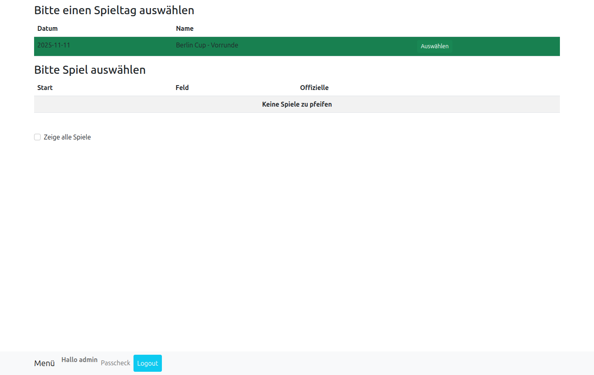
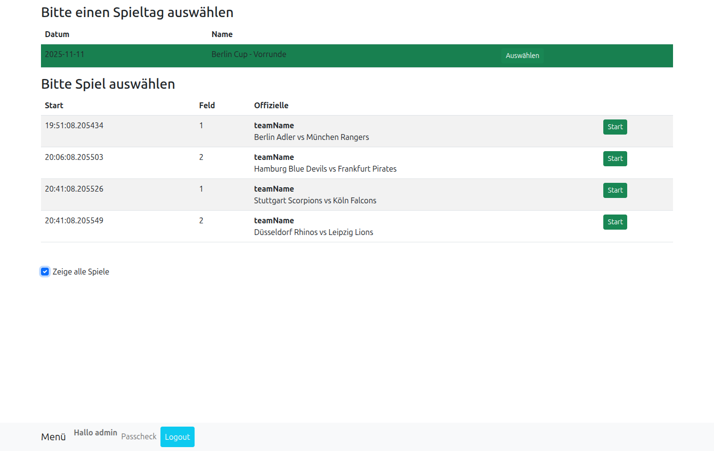
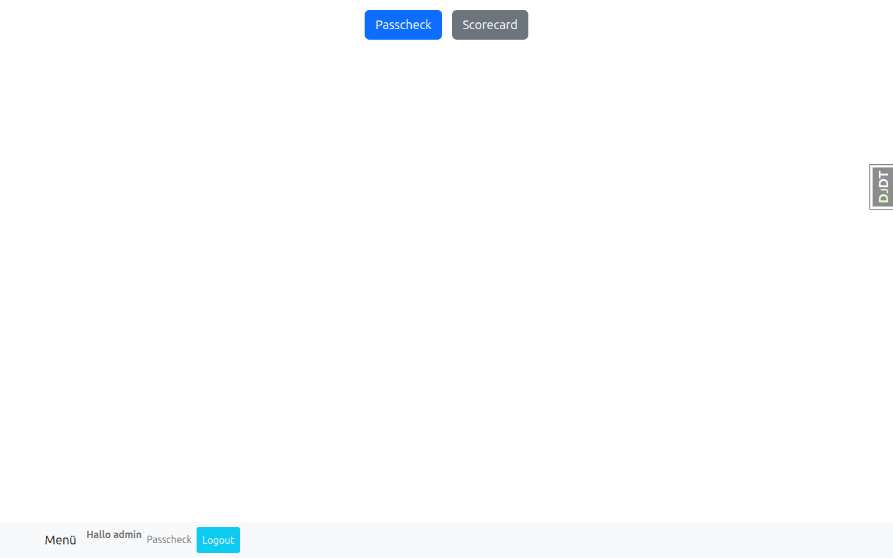
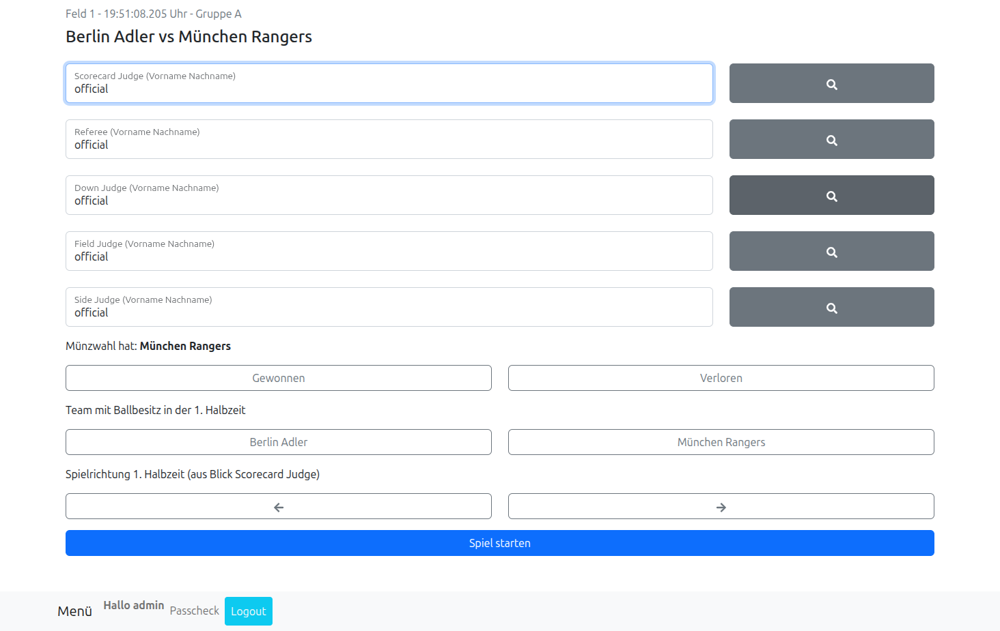
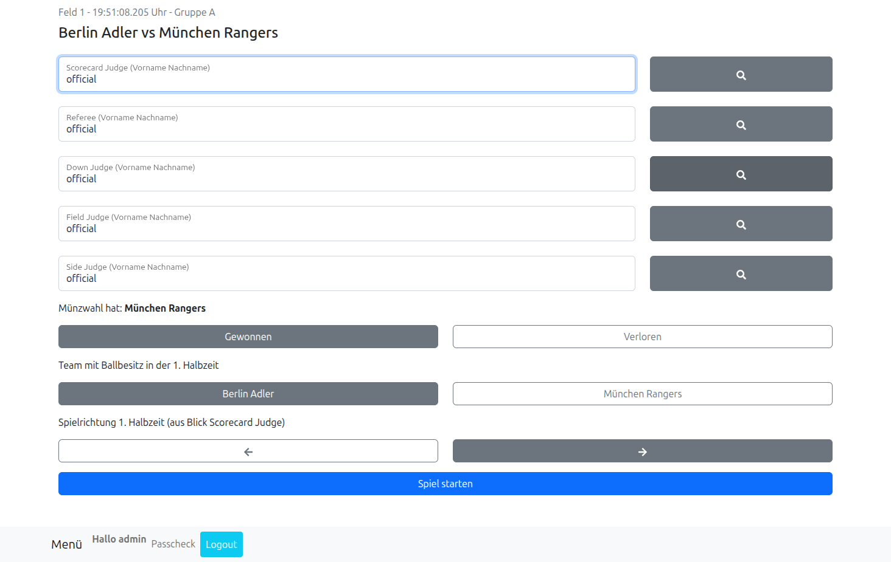
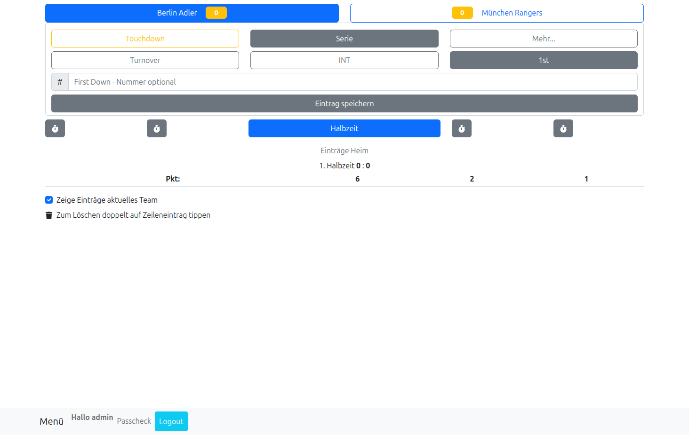
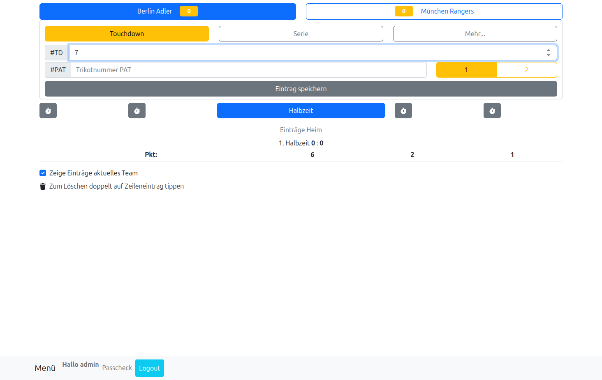
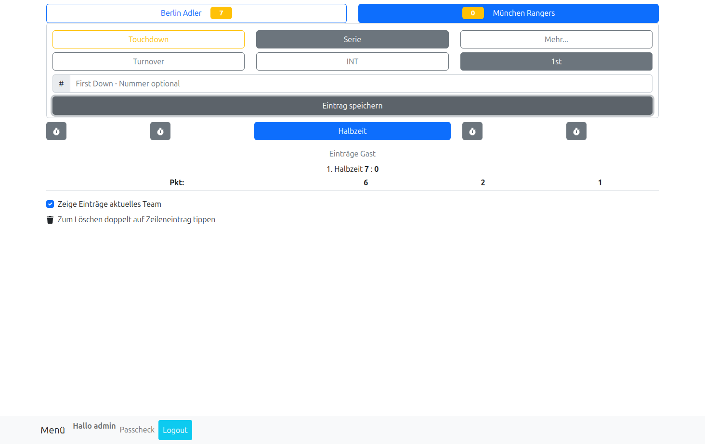

Live-Scoring
Übersicht
Die Scorecard-Funktion ermöglicht das Live-Scoring während laufender Flag-Football-Spiele. Mit der React-basierten Anwendung können Punktestände, Spielzüge und Statistiken in Echtzeit erfasst und verfolgt werden.
Mit der Scorecard können Sie:
- Spielstände live während des Spiels erfassen
- Touchdowns, Field Goals, Conversions und Safety-Punkte eintragen
- Ballbesitz und Spielzeit verfolgen
- Spielzüge und Statistiken dokumentieren
- Ergebnisse automatisch speichern und veröffentlichen
Scorecard aufrufen
Um die Scorecard zu verwenden, müssen Sie zunächst ein aktives Spiel auswählen.
So öffnen Sie die Scorecard:
- Melden Sie sich bei LeagueSphere an
- Navigieren Sie zur Scorecard-Funktion
- Wählen Sie den Spieltag aus der Liste
- Wählen Sie das Spiel, das Sie erfassen möchten

Nach Auswahl des Spieltags sehen Sie eine Liste aller Spiele. Aktivieren Sie "Zeige alle Spiele", um auch Spiele anzuzeigen, die Ihnen nicht als Schiedsrichter zugewiesen sind.


Spiel starten und vorbereiten
Vor Spielbeginn müssen einige grundlegende Einstellungen vorgenommen werden.
Spielvorbereitung:
Nach Auswahl eines Spiels gelangen Sie zur Schiedsrichter-Zuweisungsseite:

- Schiedsrichter eintragen: Erfassen Sie die Namen aller Spieloffiziellen (Referee, Scorecard Judge, Down Judge, Field Judge, Side Judge)
- Münzwurf: Wählen Sie aus, welches Team die Münzwahl gewonnen hat
- Ballbesitz 1. Halbzeit: Legen Sie fest, welches Team zuerst Ballbesitz hat
- Spielrichtung: Bestimmen Sie die Spielrichtung aus Sicht des Scorecard Judges
- Spiel starten: Klicken Sie auf "Spiel starten" um zum Live-Scoring zu gelangen

Punkte eintragen
Nach dem Spielstart gelangen Sie zur Live-Scoring-Oberfläche, wo Sie alle Spielereignisse in Echtzeit erfassen können.

Während des Spiels können verschiedene Punktearten schnell und einfach eingetragen werden.
Scoring-Optionen im Flag Football:
- Touchdown (6 Punkte): Wenn ein Team die Endzone erreicht
- Extra Point (1 oder 2 Punkte): Conversion-Versuch nach einem Touchdown
- 1 Punkt: Conversion von der 5-Yard-Linie
- 2 Punkte: Conversion von der 10-Yard-Linie
- Safety (2 Punkte): Wenn das angreifende Team in der eigenen Endzone gestoppt wird
Touchdown erfassen - Schritt für Schritt:
- Team auswählen: Klicken Sie auf das Team, das gepunktet hat (oben im Interface)
- Touchdown wählen: Wählen Sie die Option "Touchdown"
- Spielernummer eintragen: Geben Sie die Nummer des Spielers ein, der den Touchdown erzielt hat (#TD)
- Extra Point eintragen: Geben Sie die Nummer des Spielers für den Conversion-Versuch ein (#PAT)
- Conversion-Punkte wählen: Wählen Sie 1 Punkt (5-Yard-Linie) oder 2 Punkte (10-Yard-Linie)
- Speichern: Klicken Sie auf "Eintrag speichern"


Nach dem Speichern aktualisiert sich der Spielstand automatisch. Der Ballbesitz wechselt zum anderen Team, und Sie können das nächste Spielereignis erfassen.

Spielverlauf verfolgen
Die Scorecard zeigt neben dem Punktestand auch weitere wichtige Spielinformationen an.
Angezeigte Informationen:
- Aktueller Spielstand: Punktezahl beider Teams in Echtzeit
- Spielzeit: Verbleibende Zeit in der aktuellen Halbzeit
- Ballbesitz: Welches Team gerade im Angriff ist
- Halbzeit: Erste oder zweite Spielhälfte
- Spielzüge: Historie der erfassten Punkte und Aktionen
Ballbesitz wechseln:
Nach jedem Punktgewinn oder bei Turnover können Sie den Ballbesitz manuell wechseln:
- Klicken Sie auf den Button "Ballbesitz wechseln"
- Das System markiert das andere Team als im Ballbesitz
- Die Anzeige wird entsprechend aktualisiert
Spielzeit verwalten
Die Scorecard verfügt über eine integrierte Spieluhr zur Zeitverwaltung.
Zeitsteuerung:
- Start: Spieluhr starten
- Stopp: Spieluhr anhalten (bei Unterbrechungen, Time-outs)
- Halbzeit: Automatischer Übergang zur zweiten Halbzeit
- Spielende: Automatische Markierung wenn die Zeit abgelaufen ist
Time-outs:
Beide Teams haben pro Halbzeit eine begrenzte Anzahl an Time-outs:
- Erfassen Sie Time-outs über die entsprechenden Team-Buttons
- Das System zählt automatisch die verbleibenden Time-outs
- Bei überschrittener Anzahl erscheint eine Warnung
Korrekturen und Anpassungen
Fehlerhafte Eingaben können während des Spiels korrigiert werden.
Punkte korrigieren:
- Öffnen Sie die Spielzug-Historie
- Wählen Sie den fehlerhaften Eintrag aus
- Wählen Sie "Korrigieren" oder "Löschen"
- Das System aktualisiert automatisch den Gesamtstand
Spielstand manuell anpassen:
In besonderen Fällen kann der Spielstand auch manuell angepasst werden:
- Verwenden Sie diese Funktion nur bei technischen Problemen
- Dokumentieren Sie manuelle Anpassungen im Notizfeld
- Manuelle Änderungen werden in der Spielhistorie markiert
Spiel beenden und Ergebnis speichern
Nach Spielende muss das Ergebnis finalisiert und gespeichert werden.
Spielabschluss:
- Überprüfen Sie den Endstand auf Korrektheit
- Bestätigen Sie beide Team-Punktzahlen
- Klicken Sie auf "Spiel beenden"
- Das System speichert das Ergebnis automatisch
Automatische Aktionen nach Spielende:
- Ergebnis wird im Spieltagsplan aktualisiert
- Tabellenplatzierungen werden neu berechnet
- Spielstatistiken werden gespeichert
- Liveticker wird aktualisiert (wenn aktiv)
Overtime (Verlängerung):
Bei Gleichstand nach regulärer Spielzeit:
- Das System bietet automatisch Overtime an
- Wählen Sie die Overtime-Regeln aus (z.B. "First Score Wins")
- Starten Sie die Verlängerung
- Erfassen Sie die Punkte wie gewohnt
- Beenden Sie das Spiel nach Entscheidung
Spielstatistiken
Die Scorecard erfasst automatisch verschiedene Statistiken während des Spiels.
Erfasste Statistiken:
- Team-Statistiken:
- Gesamtpunkte nach Halbzeit
- Anzahl Touchdowns, Field Goals, Conversions
- Ballbesitzzeit
- Anzahl Time-outs verwendet
- Spielstatistiken:
- Gesamtspieldauer
- Punkteverlauf über die Zeit
- Spielzusammenfassung
Nach Spielende können diese Statistiken im Spieltagsdetail eingesehen werden (siehe Spieltage verwalten).
Tipps und Best Practices
Vor dem Spiel:
- Testen Sie die Scorecard-Funktion vor dem ersten Einsatz
- Stellen Sie sicher, dass das Spiel im System korrekt angelegt ist
- Prüfen Sie die Internetverbindung (für automatisches Speichern)
- Laden Sie das Gerät vollständig auf oder schließen Sie es an Strom an
Während des Spiels:
- Erfassen Sie Punkte sofort nach dem Scoring
- Bestätigen Sie kritische Punkte mit dem anderen Schiedsrichter
- Nutzen Sie die Pause-Funktion bei längeren Unterbrechungen
- Behalten Sie die Spieluhr im Auge
Geräteempfehlungen:
- Tablet: Ideal für Sideline-Nutzung (große Buttons, gute Sichtbarkeit)
- Smartphone: Kompakt, aber funktional für Backup
- Bildschirmschutz: Verwenden Sie ein Gerät mit gutem Display für Außeneinsatz
- Schutz: Schutzhülle empfohlen für Outdoor-Verwendung
Fehlerbehebung:
- Verbindung verloren: Die Scorecard speichert Daten lokal und synchronisiert automatisch
- Falscher Punktestand: Nutzen Sie die Korrektur-Funktion zeitnah
- App reagiert nicht: Aktualisieren Sie die Seite (Daten bleiben erhalten)
- Spiel kann nicht gestartet werden: Prüfen Sie, ob das Spiel im Backend angelegt ist